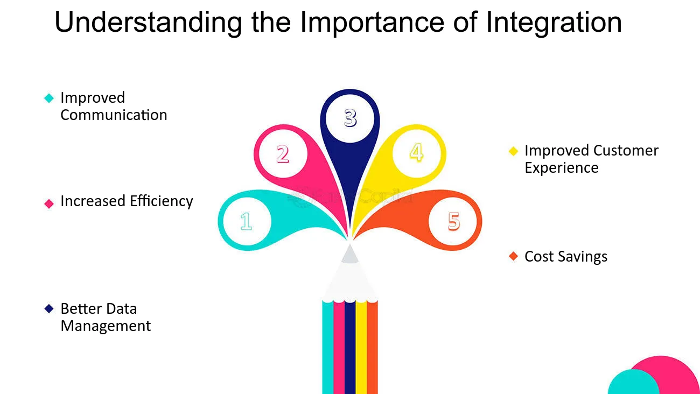

Integrating Focus Tools Into Your Workflow
The Importance of Integration
Integrating your focus tools is like assembling a high-performance team—each one complements the other, resulting in a power-packed productivity system. By combining different applications such as task managers, focus timers, and mindfulness apps, you create a cohesive workflow that maximizes efficiency and keeps distractions at bay.
When your tools work in unison, you can seamlessly transition between tasks, monitor progress, and maintain sharp focus all day long.
Strategies for Seamless Integration
Establishing a seamless workflow involves mapping out your tasks, identifying the key tools you use, and creating connections between them. Here are some actionable strategies:
- Identify Core Tools: List down the primary apps you use for task management, time tracking, and mindfulness.
- Outline Your Workflow: Create a flowchart or mind map of your daily tasks and how each tool plays a role.
- Link and Synchronize: Use integrations or built-in sync features (like calendar overlays, notifications, or APIs) to connect your task manager with your focus timer or mindfulness app.
- Iterate and Refine: Regularly review your workflow and adjust as new tools or techniques become available.


Use Cases & Best Practices
Many professionals have successfully integrated a mix of focus tools, leading to significant boosts in productivity. For example, a leading freelance designer combined Todoist with a Pomodoro timer and a mindfulness app, resulting in a 40% increase in daily output.
Real-life case studies show that a well-integrated workflow not only reduces wasted time but also enhances creativity by establishing clear routines and expectations.

Example Video: Creating a Synergistic Workflow
Watch this video to discover actionable strategies for integrating focus tools. Learn how tasks, timers, and mindfulness techniques can work together harmoniously to boost productivity and streamline your workflow.
Integration Checklist
Use this checklist to ensure your focus tools are seamlessly integrated into your daily workflow: